APC 技術ブログ
https://techblog.ap-com.co.jp/
株式会社エーピーコミュニケーションズの技術ブログです。
フィード

【OCI】OCI Functionsでオブジェクトストレージのバケット内容を一覧表示する
APC 技術ブログ
こんにちは、クラウド事業部の島田です。Oracle Cloud Infrastructure Architect Associateを最近取得したため、実際にOCIに触れてみよう！を目的として動作検証を行いました。Oracle Cloud Infrastructure (OCI) Functions を活用すると、サーバーレスアーキテクチャで手軽に様々な処理を実行できます。今回は、OCI Functions を使って、オブジェクトストレージのバケットの中身（オブジェクトの一覧）を表示するシンプルな関数を作成し、デプロイ、テストする手順を解説します。 1. はじめに：OCI Functions …
33分前

【OCI】オブジェクトストレージのバージョニング設定をしてみた
APC 技術ブログ
] 目次 目次 はじめに こんな方へおすすめの記事です 前提 バージョニングについて バージョニング設定 ファイルアップロード バージョン管理できているか確認 どんなファイルにお勧めなの？ おわりに お知らせ はじめに こんにちは、クラウド事業部の清水(駿)です！ 普段AWS中心の私が【Oracle Cloud Infrastructure Architect Associate 2024】受験勉強の際に実施したオブジェクトストレージのバージョニング設定をハンズオン手順をまとめました。 AWSとは異なった点もあったのでOCI学習をしている皆様の参考になれば幸いです！ こんな方へおすすめの記事で…
1時間前
【合格体験記】OCI 2024 Architect Associate (1Z0-1072-24)
APC 技術ブログ
こんにちは、株式会社エーピーコミュニケーションズ クラウド事業部の鈴木歩です。 先日OCI認定資格のOCI 2024 Architect Associate (1Z0-1072-24)に合格したので 体験記を書きたいと思います。 保有資格(執筆時点) LinuC系(101, 102, 201, 202, 300, 304) Microsoft系(MCP70-680, AZ-900) IPA系(FE) AWS系(CLF, AIF, SAA, SOA, DVA, DEA, MLA, SAP, DOP, SCS, ANS, MLS) Oracle系(OCI2024FA, OCI2024AIFA, O…
2時間前
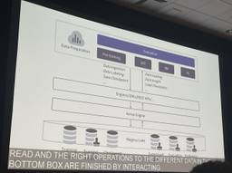
ByteDanceはIcebergとMosaic Streamingをどう拡張したか？大規模ML基盤「Magnus Lake」と「ByteD Streaming」の全貌
APC 技術ブログ
※本記事は、Data + AI Summit のセッションを現地で視聴したエンジニアが、内容をできる限り客観的に共有することを目的に、生成AIを活用して作成したものです。 ― エーピーコミュニケーションズ Lakehouse部 Data + AI Summitで発表されたByteDanceのソフトウェアエンジニア、Zilong Zhou氏によるセッション「A Unified Solution for Data Management and Model Training With Apache Iceberg and Mosaic Streaming」は、同社が直面する超大規模な機械学習ワークフ…
16時間前
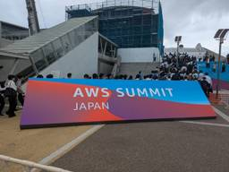
AWS Summit Japan 2025に参加してGitLab Duo with Amazon Qのセッションを聞いてきた
APC 技術ブログ
こんにちは、クラウド事業部の山路です。 今回は先日開催されたAWS Summit Japan 2025の1日目に参加したので、その感想の紹介になります。特に個人的に追いかけているGitLabに関するセッションなどがあったので、そちらを中心に紹介します。 AWS Summit Japan 2025の様子 私は昨年度のAWS Summit Japanにも参加させていただいており、 (天候が悪かったにもかかわらず) 昨年と比べて参加者が多い印象でした。 EXPOの様子はこちら。今年も多くの企業が参加されており、いろんなグッズをいただきました。個人的なお気に入りはHashiCorp社の"箸"とPage…
19時間前
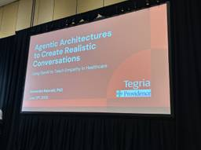
生成AIは「共感」を教えられるか？マルチエージェントが拓く医療コミュニケーションの新たな地平
APC 技術ブログ
※本記事は、Data + AI Summit のセッションを現地で視聴したエンジニアが、内容をできる限り客観的に共有することを目的に、生成AIを活用して作成したものです。 ― エーピーコミュニケーションズ Lakehouse部 医療現場における患者と医療従事者のコミュニケーションは、治療の成果そのものを左右するほど重要です。特に、終末期医療のような精神的に困難な状況では、深い共感に基づいた対話が求められます。この重要なスキルをいかにして効率的に、かつ大規模に教育するか。この課題に対し、Tegria ConsultingとProvidence Healthcareが共同で開発したAI訓練ツール「…
1日前
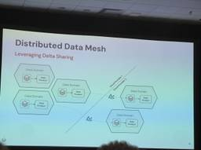
Mercedes-Benzが実践するクロスクラウドData Mesh：Delta SharingとUniFormで実現するコスト効率とデータ連携
APC 技術ブログ
※本記事は、Data + AI Summit のセッションを現地で視聴したエンジニアが、内容をできる限り客観的に共有することを目的に、生成AIを活用して作成したものです。 ― エーピーコミュニケーションズ Lakehouse部 現代のエンタープライズ環境において、複数のクラウドを併用するマルチクラウド戦略はもはや珍しいものではありません。しかし、その利便性の裏側で、多くの企業が「クラウド間のデータ共有」という大きな課題に直面しています。特に、クラウドプロバイダーをまたぐデータの転送コスト、いわゆる「エグレスコスト」は、データ活用の規模が拡大するにつれて無視できない負担となります。 今回ご紹介す…
1日前
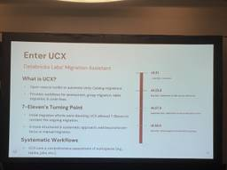
7-Elevenが実践したDatabricks Unity Catalog移行の現実解：UCXツールで複雑な大規模移行を成功に導く
APC 技術ブログ
※本記事は、Data + AI Summit のセッションを現地で視聴したエンジニアが、内容をできる限り客観的に共有することを目的に、生成AIを活用して作成したものです。 ― エーピーコミュニケーションズ Lakehouse部 DatabricksのUnity Catalog（UC）への移行は、多くの企業にとってデータガバナンスを近代化するための重要なステップです。しかし、長年運用されてきた複雑なデータ基盤、いわゆる「Brownfield」環境からの移行は、決して平坦な道のりではありません。 先日開催されたData + AI Summitのセッション「Story of a Unity Cata…
1日前
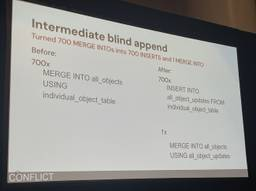
データレイクハウスにおけるトランザクション競合とその解決策
APC 技術ブログ
※本記事は、Data + AI Summit のセッションを現地で視聴したエンジニアが、内容をできる限り客観的に共有することを目的に、生成AIを活用して作成したものです。 ― エーピーコミュニケーションズ Lakehouse部 データレイクハウスの運用が広がる中で、多くのデータエンジニアが直面する課題の一つが「トランザクションの競合」です。特に、複数のデータソースから同時に書き込みや更新が行われる環境では、データの一貫性を保ちながら高いスループットを維持することは簡単ではありません。 本記事では、Data + AI Summitで発表されたAsanaのソフトウェアエンジニア、Dima Kama…
1日前
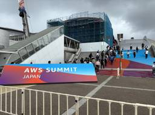
【イベントレポート】AWS Summit Japan 2025に初参加しました。
APC 技術ブログ
はじめに こんにちは、クラウド事業部の田島です。 2025年6月25、26日に開催されたAWS Summit Japan 2025の1日目に参加してきました。 参加した所感について記載していこうと思います。 会場の雰囲気 展示など Serverlesspressoは多くの人でにぎわっていました。 Serverlesspressoの詳細については以下で紹介されているので、気になる方は確認してみてください。 https://aws.amazon.com/jp/builders-flash/202406/serverlesspresso/ すごい速度で提供されていました。 2～3分で無事コーヒーをい…
2日前
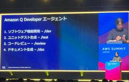
【AWS】AWS Summit Japan 2025 に参加してきました (セッション感想)
APC 技術ブログ
はじめに こんにちは、クラウド事業部の早房です。 2025/6/25~6/26に開催されたAWS Summit Japan 2025に現地参加してきました！ 今回は私が参加したセッションの中から2つのセッションをピックアップして紹介します。 はじめに AWS Summit Japan 2025 のセッション どのセッションに参加すべき？ デモで学ぶ！Amazon Q Developer エージェントで実現する開発効率化 クラウドストレージのコスト最適化戦略 - AWS ストレージの賢い活用法 おわりに お知らせ AWS Summit Japan 2025 のセッション 160 以上のセッション…
2日前
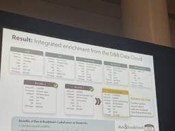
DatabricksとD&Bが拓く、次世代マスターデータ管理（MDM）の現実解
APC 技術ブログ
※本記事は、Data + AI Summit のセッションを現地で視聴したエンジニアが、内容をできる限り客観的に共有することを目的に、生成AIを活用して作成したものです。 ― エーピーコミュニケーションズ Lakehouse部 企業活動の根幹をなすデータ。しかし、そのデータが部署ごとにサイロ化し、重複や不整合に悩まされている現場は少なくありません。この普遍的な課題に対する強力な処方箋が「マスターデータ管理（MDM）」です。本記事では、Data + AI Summitで発表された講演「Scaling Modern MDM With Databricks, Delta Sharing and Du…
3日前

KubeCon & CloudNativeCon Japan 2025 参加レポート - 埜下
APC 技術ブログ
こんにちは、ACS 事業部の埜下です。 2025 年 7 月 16 日、17 日に開催された KubeCon & CloudNativeCon Japan 2025 に参加してきました！ 今までの KubeCon は海外開催だったこともありオンライン参加のみだったのですが、その KubeCon が日本で開催されるということで四国から参戦しました。 そして KubeCon だけでなく、その前日に開催された Japan Community Day も参加してきました。 events.linuxfoundation.org 今回は参加レポートということでイベントの内容をお伝えしようと思いますが、技術…
3日前
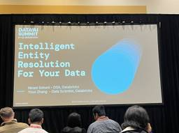
データの名寄せは新たなステージへ：ベクトル検索とLLMが拓くエンティティ解決の最前線
APC 技術ブログ
※本記事は、Data + AI Summit のセッションを現地で視聴したエンジニアが、内容をできる限り客観的に共有することを目的に、生成AIを活用して作成したものです。 ― エーピーコミュニケーションズ Lakehouse部 データが爆発的に増え続ける現代において、異なるソースに散らばる情報を正しく統合することは、ビジネスの意思決定を左右する重要な課題です。今回は、DatabricksのスタッフデータサイエンティストであるAimee Shi Zhang氏による講演「Entity Resolution for the Best Outcomes on Your Data」を基に、この「エンティ…
3日前
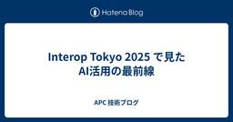
Interop Tokyo 2025 で見たAI活用の最前線
APC 技術ブログ
はじめまして、今年新卒として入社させていただいた吉村です。 先日、幕張メッセで開催された「Interop Tokyo 2025」に参加しました。本記事では、その中で特に興味深かった展示や、私が感じた学びについてご紹介します。至らない点もあるかと存じますが、皆様のご参考になれば幸いです。 1.はじめに：Interop Tokyoの感想 今年のInteropにおける全体的な展示テーマとして印象的だったのは、AIを活用したサービスをいたるところで目にしたことでした。ネットワーク機器における活用も例外ではなく、複雑な管理や運用をAIがどのように効率化し、自動化していくのかについて興味を持ちました。 2…
3日前

【OCI】OCIを知って驚いた “リージョンごとID基盤” という世界観
APC 技術ブログ
目次 目次 はじめに リージョン毎のアイデンティドメイン 地域に閉ざしたサービス 終わり お知らせ はじめに こんにちは、クラウド事業部の大久保です。 普段Azureを触っているのですが、事業部でOCIを推進している中で資格取得が奨励されており、 Oracle Cloud Infrastructure Architect Associateを取得した際の個人的なOCIへの感想を書きたいと思います。 リージョン毎のアイデンティドメイン OCIではtenancy(いわゆるテナント)を立ち上げる際にアイデンティドメインを作成します。 アイデンティドメインはリージョンの選択と共に行われベースとなりリー…
3日前
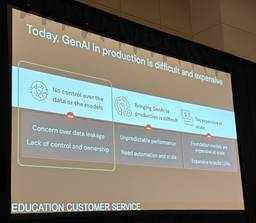
AIプロダクション化の壁を越える：Databricksが提唱するDatabricks AI Security Framework (DASF)の解説
APC 技術ブログ
AIプロダクション化の壁を越える：Databricksが提唱するDatabricks AI Security Framework (DASF)の解説 AI、特に生成AIの活用がビジネスの核心に迫る中、多くの企業がその本番導入（プロダクション化）の壁に直面しています。Databricksの講演「# Best Practices to Mitigate AI Security Risks」では、同社のプラットフォームセキュリティを率いるSamrat Ray氏と、プリンシパルセキュリティエンジニアのArun Pammalapati氏が登壇し、この課題に対する体系的なアプローチを解説しました。 本記事…
3日前
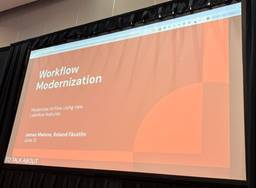
AirflowからLakeflowへ？Databricksが示すデータワークフロー近代化の選択肢
APC 技術ブログ
AirflowからLakeflowへ？Databricksが示すデータワークフロー近代化の選択肢 データエンジニアリングの世界では、ワークフローのオーケストレーションが常に中心的な課題です。長年にわたり、多くの組織がApache Airflowをその強力なエコシステムと柔軟性のために採用してきました。しかし、プラットフォームが進化するにつれて、運用負荷や近代的なデータスタックとの統合が新たな課題として浮上しています。 本記事では、DatabricksのプロダクトマネージャーであるJames氏とRoland氏によるセッション「From Apache Airflow to Lakeflow Job…
3日前
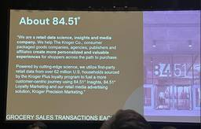
ストリーミングデータフローにおけるCDF活用術：84.51°「Better Together」アーキテクチャ
APC 技術ブログ
※本記事は、Data + AI Summit のセッションを現地で視聴したエンジニアが、内容をできる限り客観的に共有することを目的に、生成AIを活用して作成したものです。 ― エーピーコミュニケーションズ Lakehouse部 データストリーミングの世界では、一方的にデータを追加し続ける「アペンドオンリー」処理は比較的扱いやすいものです。しかし、データソースに更新（UPDATE）や削除（DELETE）が含まれると、従来のストリーミングフレームワークはエラーを返したり、イベントを無視してしまったりしがちです。下流のテーブルが最新の状態を保てず、分析基盤の信頼性が損なわれるのです。 本記事では、米…
3日前
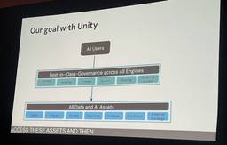
Databricks Unity Catalog 最新アップデート解説：ライブデモから紐解く次世代データ＆AIガバナンスの全貌
APC 技術ブログ
※本記事は、Data + AI Summit のセッションを現地で視聴したエンジニアが、内容をできる限り客観的に共有することを目的に、生成AIを活用して作成したものです。 ― エーピーコミュニケーションズ Lakehouse部 Databricksが開催したセッション「What’s New in Unity Catalog With Live Demos」では、同社のプロダクトチームに所属するPaul Roome氏とMert Neemuchwala氏が登壇し、Unity Catalogの最新機能と今後のロードマップについて、数多くのライブデモを交えながら解説しました。本記事では、このセッション…
3日前
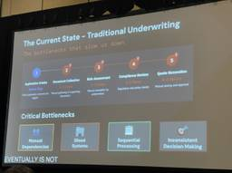
チャットボットの先へ：Agentic AIが保険引受プロセスを数週間から数分に短縮する未来
APC 技術ブログ
※本記事は、Data + AI Summit のセッションを現地で視聴したエンジニアが、内容をできる限り客観的に共有することを目的に、生成AIを活用して作成したものです。 ― エーピーコミュニケーションズ Lakehouse部 DatabricksのAmit Kumar Jha氏とMarcela Granados氏による講演「Beyond Chatbots: Building Autonomous Insurance Applications With Agentic AI Framework」では、保険業界が直面する大きな課題と、それを解決するAgentic AIフレームワークの可能性が示さ…
3日前
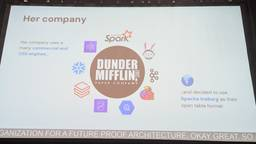
Databricks Unity Catalogで実現する、次世代のApache Iceberg活用術
APC 技術ブログ
Databricks Unity Catalogで実現する、次世代のApache Iceberg活用術 先日開催されたDatabricksのセッション「Databricks + Apache Iceberg™: Managed and Foreign Tables in Unity Catalog」では、現代のレイクハウスアーキテクチャにおける重要な課題、すなわち「どのApache Icebergカタログを選択すべきか」という問いに対する一つの明確な答えが示されました。本記事では、このセッションの内容を基に、Icebergカタログ選定の要点と、Databricks Unity Catalogが…
3日前
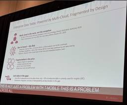
DatabricksとSnowflakeの壁を壊す：T-Mobileが実現したIcebergとUnity Catalogによるデータ相互運用性
APC 技術ブログ
DatabricksとSnowflakeの壁を壊す：T-Mobileが実現したIcebergとUnity Catalogによるデータ相互運用性 現代のデータドリブンな企業において、DatabricksとSnowflakeはそれぞれが強力なデータプラットフォームとして確固たる地位を築いています。しかし、多くの組織では両プラットフォームが併存し、結果としてデータのサイロ化という新たな課題が生まれています。データのコピーはコスト、鮮度、ガバナンスの観点から決して理想的ではありません。 最近のカンファレンスセッション「Breaking Silos: Enabling Databricks–Snowfl…
3日前
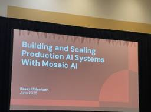
DatabricksのMosaic AIが拓く、本番AIシステムの構築とスケーリングの未来
APC 技術ブログ
※本記事は、Data + AI Summit のセッションを現地で視聴したエンジニアが、内容をできる限り客観的に共有することを目的に、生成AIを活用して作成したものです。 ― エーピーコミュニケーションズ Lakehouse部 エンタープライズ環境で生成AIを本格的に導入しようとするとき、多くの組織が共通の課題に直面します。データのサイロ化、AIモデルの品質管理、スケーラビリティの確保、そして何よりも厳格なガバナンスとセキュリティの維持です。これらの課題を乗り越え、プロダクションレベルのAIシステムをいかに構築し、スケールさせていくか。これは現代のテクノロジーリーダーにとって重要なテーマの一つ…
3日前
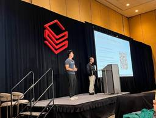
Databricks AI/BIダッシュボードはここまで来た！
APC 技術ブログ
※本記事は、Data + AI Summit のセッションを現地で視聴したエンジニアが、内容をできる限り客観的に共有することを目的に、生成AIを活用して作成したものです。 ― エーピーコミュニケーションズ Lakehouse部 エンタープライズ規模のレポーティングを実現する新機能まとめ 今年初夏に開催されたData + AI Summitでは、多くの発表がありましたが、特にエンタープライズの現場で働く人々にとって見逃せないセッションがありました。Deliver Data Where It’s Needed: Scale AI/BI Dashboards for Enterprise Repor…
3日前
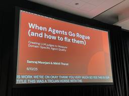
ドメイン特化型AIエージェントの品質をどう測るか？ MLflow 3とLLMジャッジによる実践的アプローチ
APC 技術ブログ
※本記事は、Data + AI Summit のセッションを現地で視聴したエンジニアが、内容をできる限り客観的に共有することを目的に、生成AIを活用して作成したものです。 ― エーピーコミュニケーションズ Lakehouse部 ドメイン特化型AIエージェントの品質をどう測るか？ MLflow 3とLLMジャッジによる実践的アプローチ 生成AI、特に特定の業務領域に特化したドメイン特化型AIエージェントの開発が急速に進んでいます。しかし、その自由で創造的な性質ゆえに、「品質」をどう定義し、どう測定するかは多くの開発者が直面する大きな課題です。 本記事では、Databricksのソフトウェアエンジ…
3日前
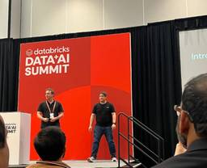
巨大組織のMLOps変革：PetrobrasがDatabricksで実現した高速化
APC 技術ブログ
※本記事は、Data + AI Summit のセッションを現地で視聴したエンジニアが、内容をできる限り客観的に共有することを目的に、生成AIを活用して作成したものです。 ― エーピーコミュニケーションズ Lakehouse部 Data + AI Summitで発表されたセッション「Petrobras MLOps Transformation With MLflow and Databricks」では、ブラジルのエネルギー企業PetrobrasのコンサルタントであるBruno Guberfain do Amaral氏が登壇しました。本記事では、同社が手動で非効率だったMLOpsプロセスを刷新し…
3日前

GitHub Advanced Security - Security Overview：セキュリティの状況を把握する
APC 技術ブログ
はじめに Security Overview とは リポジトリ の Security Overview Organization の Security Overview Enterprise の Security Overview おわりに ACS 事業部のご紹介 はじめに こんにちは。ACS 事業部の田中です。 過去の記事では GitHub Advanced Security（GHAS）の機能を利用して、リポジトリ内のコードを分析し、潜在的な脆弱性を検出してきました。 今回はセキュリティアラートの件数や対応状況を確認・管理する Security Overview を紹介します。 techbl…
3日前
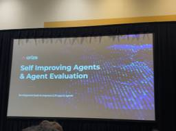
ArizeとDatabricks ML Flowによるエージェントの自己改善とエージェント評価
APC 技術ブログ
※本記事は、Data + AI Summit のセッションを現地で視聴したエンジニアが、内容をできる限り客観的に共有することを目的に、生成AIを活用して作成したものです。 ― エーピーコミュニケーションズ Lakehouse部 生成AIエージェントは自ら賢くなるのか？ 生成AI、特に自律的にタスクをこなす「AIエージェント」の進化は目覚ましいものがあります。しかし、その複雑さが増すにつれて、開発段階でのテストだけでは品質を担保しきれないという課題も浮き彫りになってきました。本番環境で予期せぬ振る舞いをしたり、ユーザーの意図を汲み取れなかったりするケースは後を絶ちません。 この記事では、講演「S…
3日前
【AWS】AWS Summit Japan 2025 に参加してきました (基調講演について)
APC 技術ブログ
はじめに こんにちは、クラウド事業部の早房です。 2025/6/25~6/26に開催されたAWS Summit Japan 2025に現地参加してきました。 今回は、基調講演で紹介されたトピックの中からいくつかピックアップして振り返ってみようかと思います。 はじめに 基調講演について サービスの紹介 Anthropic 日本支社設立 おわりに お知らせ 基調講演について AWS Summit 開幕を告げる最初のセッションです。会場の座席に座るには会場受付で指定席券を確保しておく必要があります。 ※指定席券がない場合でも、サテライト会場や立ち見での参加が可能です。 ※最後列の一番端の席でした。 …
3日前